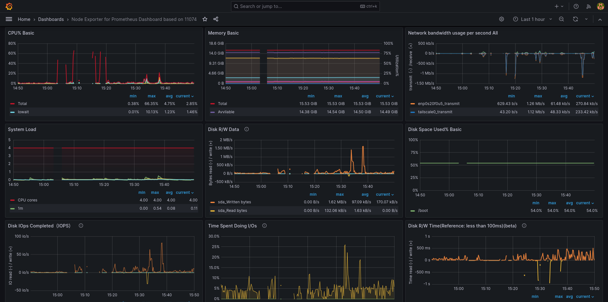
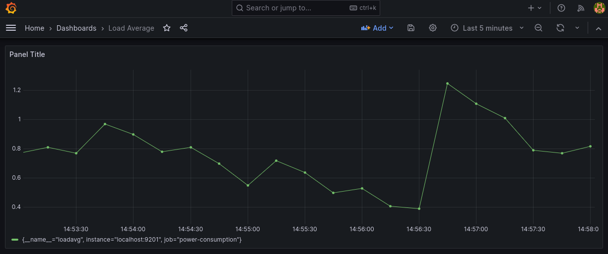

Giovanni's Diary > Subjects > Programming > Linux > Notes >
Monitor your Linux system with Prometheus and Grafana
If you are managing any system, you need to have an effective way to monitor, log and receive notifications about the state of the system. A classic solution for Linux based servers is the Prometheus + Grafana stack. In this document I will explain you how to setup this and how to create a custom prometheus exporter.
We will see how to setup both Prometheus and Grafana to monitor various system statistics which are fetched by node exporter. I will be using Fedora 42 as a base.
Index
- Setting up node exporter
- Setting up Prometheus
- Setting up Grafana
- Custom exporter
Setting up node exporter
Node exporter is a service that collects various system information such as CPU load, ram usage and much more. Fedora already provides the package "node-exporter" and service "node [underscore] exporter":
sudo dnf install node-exporter sudo systemctl start node_exporter
The service will listen on port 9100.
Setting up Prometheus
You can download the latest version of Prometheus from GitHub:
LATEST=$(curl -s https://api.github.com/repos/prometheus/prometheus/releases/latest | jq -cr .tag_name) wget https://github.com/prometheus/prometheus/releases/download/$LATEST/prometheus-"${LATEST:1}".linux-amd64.tar.gz tar -xf prometheus-* cd prometheus-"${LATEST:1}".linux-amd64 sudo cp prometheus /usr/local/bin/
You need to add node exporter to the list of services to scrape, you
should edit the /etc/prometheus/prometheus.yml file and add the
following Item in the "scrape configs" section:
scrape_configs: - job_name: 'linux-server' scrape_interval: 5s static_configs: - targets: ['localhost:9100']
You can start the server by running the command "prometheus". It will listen in port 9090 where you can access the html page. If you are not lazy you can add a systemd service for prometheus (or whatever daemon management you are using). To create a systemd service, add the following content to the file "/etc/systemd/system/prometheus.service":
[Unit] Description=Prometheus Documentation=https://github.com/prometheus/prometheus Wants=network-online.target After=network-online.target [Install] WantedBy=multi-user.target [Service] Type=simple User=prometheus Group=prometheus ExecReload=/bin/kill -HUP $MAINPID ExecStart=/usr/local/bin/prometheus \ --config.file=/etc/prometheus/prometheus.yml \ --storage.tsdb.path=/etc/prometheus/data \ --storage.tsdb.retention.time=30d
Then change permissions, reload the daemons and start the service:
sudo chown prometheus:prometheus -R /etc/prometheus sudo systemctl daemon-reload sudo systemctl start prometheus
Prometheus has a web UI accessible by default at port 9090, we will
now see how to setup Grafana, a popular and powerful UI to visualize
the data.
Setting up Grafana
Install Grafana from your favorite package manager:
sudo dnf install grafana
Fedora already creates a systemd service so you can start it as usual, otherwise you can create the service yourself like we did before.
sudo systemctl start grafana-server
If you are using the default Fedora's SELinux, in order to allow grafana to use the prometheus tcp socket we need to write a custom policy. Create the file "grafana [underscore] websm.te" and add the following content:
module grafana_websm 1.0;
require {
type grafana_t;
type websm_port_t;
class tcp_socket name_connect;
}
# Allow Grafana to connect to ports labeled websm_port_t
allow grafana_t websm_port_t:tcp_socket name_connect;
Then compile It and load It:
checkmodule -M -m -o grafana_websm.mod grafana_websm.te semodule_package -o grafana_websm.pp -m grafana_websm.mod sudo semodule -i grafana_websm.pp
Additionally, if you are using a firewall and you want to access the port from another device, you need to enable the port 3000. On firewalld, you can use the following commands:
sudo firewall-cmd --permanent --add-port=30002/tcp sudo firewall-cmd --reload
You can finally go to "http://localhost:3000" and login with "admin" as the username and password and add prometheus as a source in Home > Connections > Add a new connection and search for prometheus.
You can find already made dashboards for node exporter on the grafana website.

Figure 1: Grafana dashboard I found online
Custom Exporter
What if you wanted to log something custom to your dashboard, you can easily do this by starting a tcp server and serving the data you want prometheus to read. Then, you need to tell prometheus to fetch your service like we did for node exporter.
One of the simplest way to create a server is using socat. For example, the following script creates a server that serves the system's load average metric for prometheus.
#!/bin/bash set -e INTERVAL=5 # seconds METRICS_FILE="/tmp/power_metrics.prom" PORT=9200 touch $METRICS_FILE # Start background HTTP server socat TCP-LISTEN:$PORT,reuseaddr,fork SYSTEM:"echo HTTP/1.0 200; echo Content-Type\: text/plain; echo; cat \"$METRICS_FILE\"" & # Metrics writer loop while true; do sleep "$INTERVAL" loadavg=$(cat /proc/loadavg | awk '{print $1 }') cat <<EOF > "$METRICS_FILE" # HELP loadavg Load Average # TYPE loadavg gauge loadavg $loadavg EOF done
And update the prometheus.yml file:
scrape_configs: ... - job_name: 'load-average' scrape_interval: 5s static_configs: - targets: ['localhost:9200']
This script runs the tcp server in the background and updates the
served content each $INTERVAL seconds and It exposes the loadavg
metric with the value of the average system load in the last
minute. You can now add a new dashboard in grafana from the dashboard
section and clicking "New > New Dashboard > Add Visualization". You
select prometheus as a source and you add your custom metric and clock
"apply".

Figure 2: Custom dashboard
You can create the http server in any other way, maybe integrate It with the application you have been working on, and so on.
Travel: Linux Notes, Index